Open your character blueprint.
Click "Add Component" and write "BP Inventory Component".
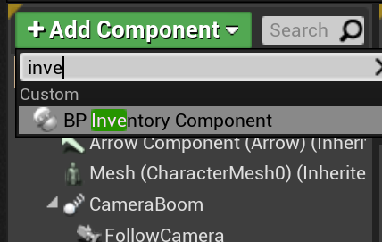
Drag the component into the graph, pull out the pin from it and get the control nodes from it.
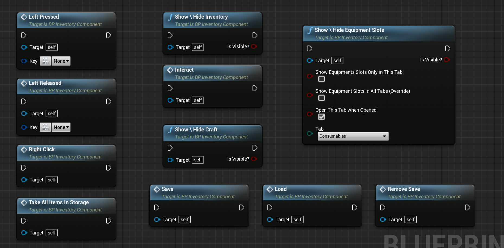
Set up controls like this:
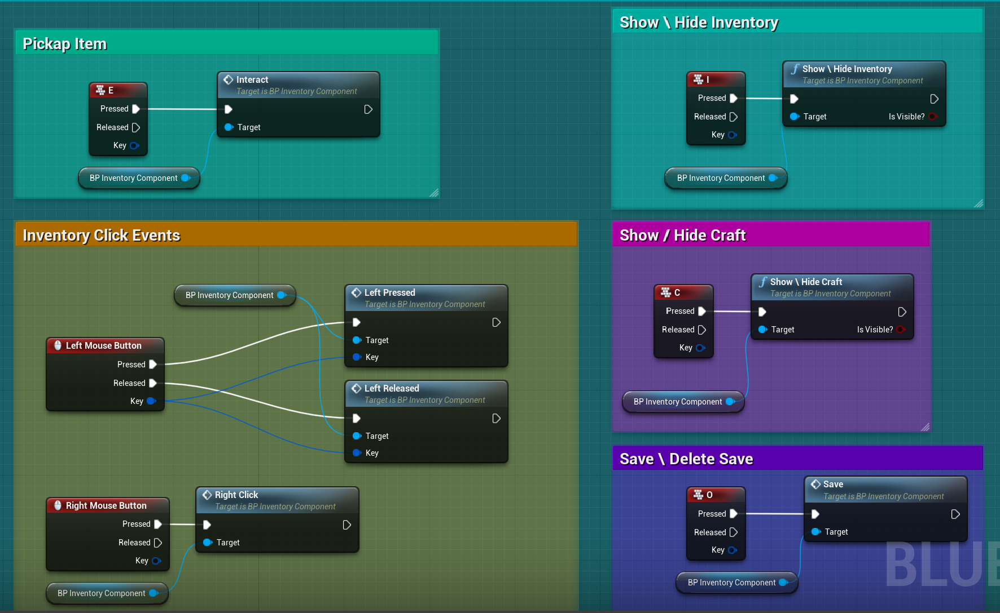
The inventory is automatically attached to your character's camera component,
but if you want to attach it to another component or camera component, you can use these nodes:
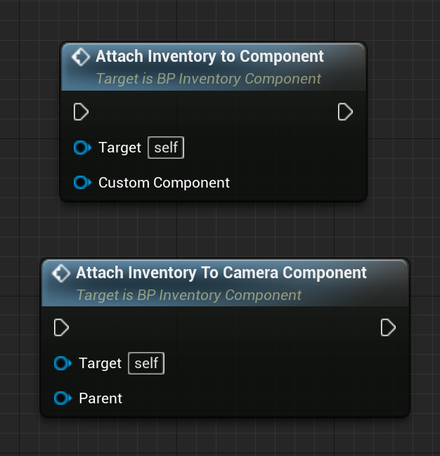
On the Components tab, click on "BP_InventoryComponent" and in the details tab select the options you need.
You can choose Interactions Pressets or choose "None" and using interactions Nodes.
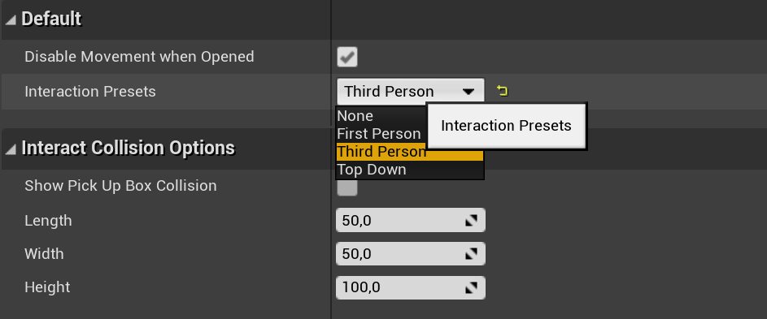
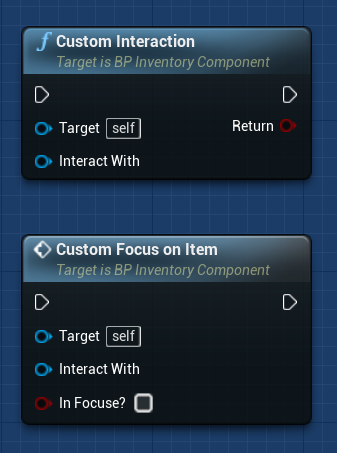
I choose "Third Person Preset". I turned off the option "Disable Movement When Opened"
because when we open the inventory when we jump, the character stops in the air.
Instead, I block the movement like this:
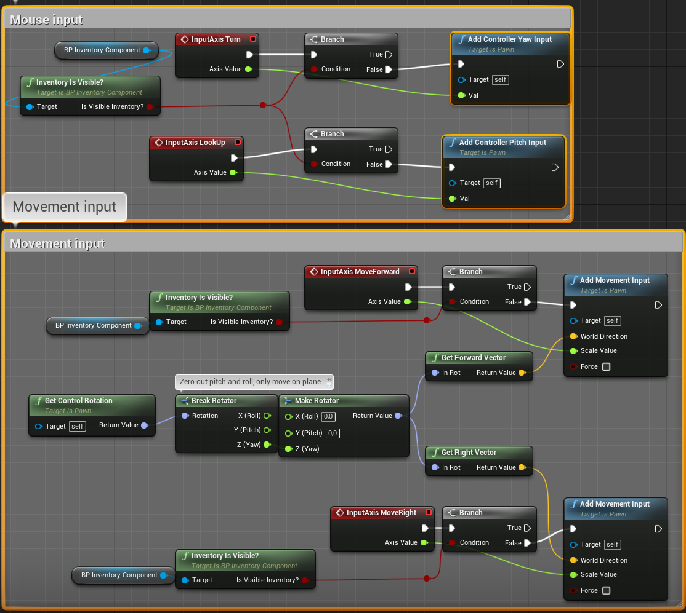
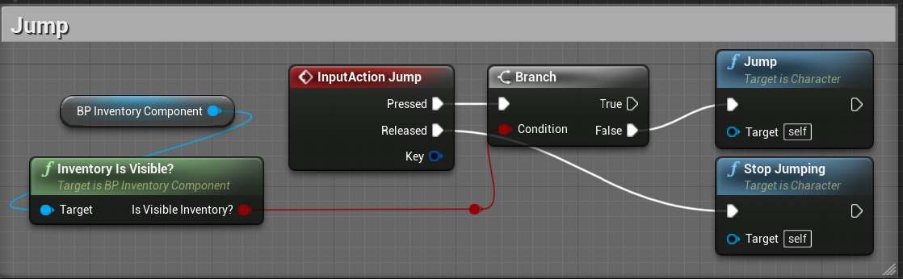
If you have selected one of the interaction presets, you can add the "Visualize Pick Up Box Collision" node
to the Construction Script to visualize the area in which we can interact with objects.
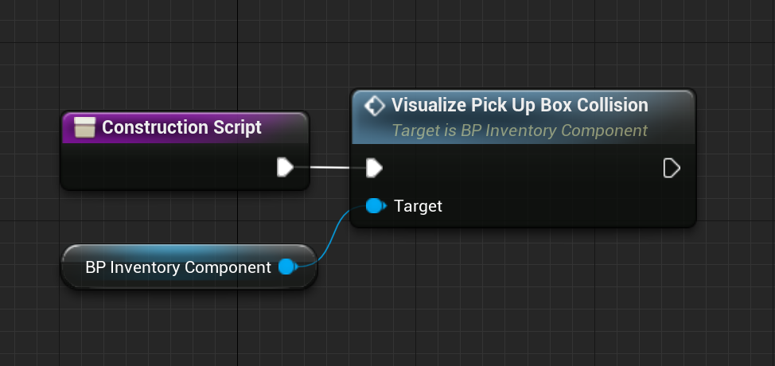
Now we can set the desired interaction area in the Inventory Component.
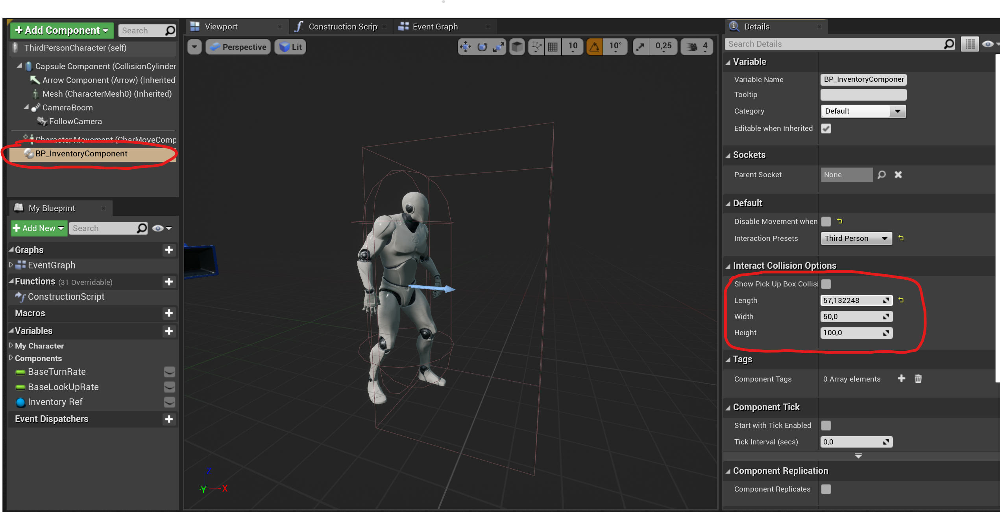
Here is a list of all the nodes you can use:
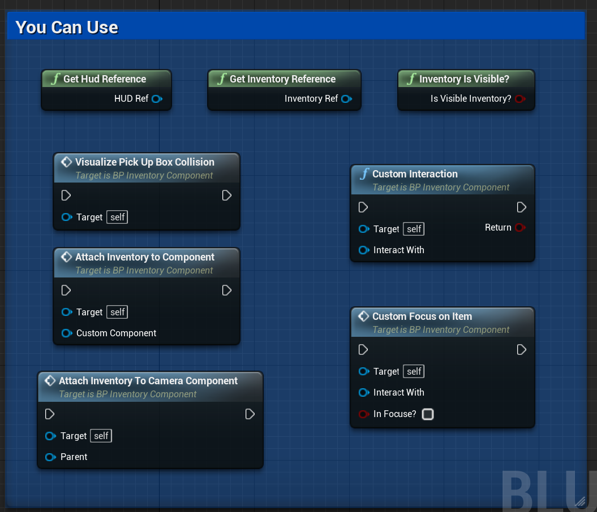
I also take the inventory reference for the begin play event.
In order to get access to all the functions of the inventory.
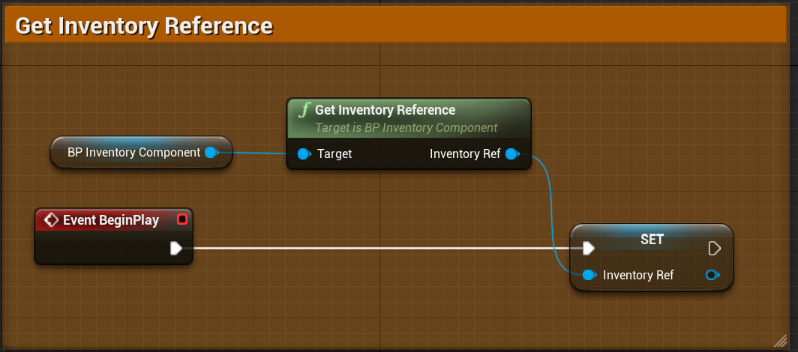
Here is a list of all the nodes and dispatchers you can use:
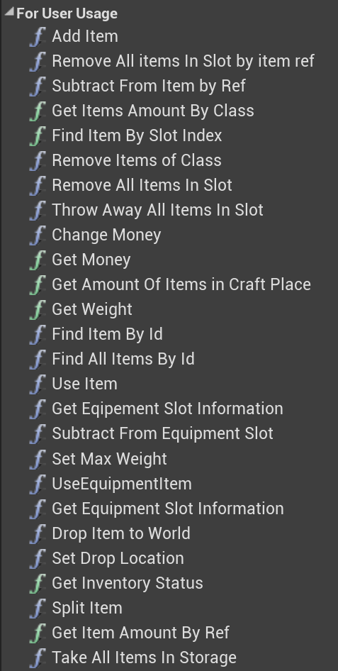
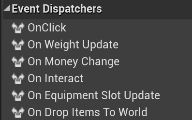
Done.